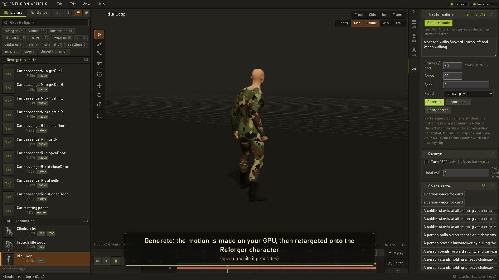

FOR ARMA REFORGER / IN ACTIVE DEVELOPMENT
Make motion
yours.
Shape a walk. Fix a footstep. Bring a creature to life. Animation tools built around Enfusion’s native workflow.

THE TOOLKIT
One workflow.
More ways to create.
Explore what’s available, where to find it, and what still needs a test in your project.
No matching tools. Try “foot”, “rig”, “events” or clear your search.
SEE IT IN ACTION
Your first clip,
from start to save.
The existing creator walkthrough covers setup, optional text-to-motion, foot timing and saving into an addon. Download and generation waits are sped up.
Read the walkthrough steps
Open the UI from Workbench’s Enfusion Actions plugin. The setup check identifies missing project files and the preview character; the sample character is obtained separately from Bohemia’s public samples.
The recording then sets up Kimodo, enters a motion prompt and generates a clip. This optional integration needs its own local server. You can instead open an existing library clip or TXA.
Inspect the foot-contact lanes and footprints. Enable In place and Follow path to remove travelling motion while retaining the step sway. Save the resulting TXA into the selected addon. In Workbench, use Import saved clips, check the build log and preview the ANM on the matching model.
The video has on-screen instructional text. Some labels have changed since it was recorded; the linked first-test guide reflects the newer workflow.
FIRST FLIGHT
Start small.
See it working.
Make one edit, save one clip, check it on the right model. Then build from there.
Private development repoTool source is currently private; public release comes after review.
Windows · Arma Reforger Tools · Python 3.11+
Blender 4.2+ is needed for fitted model export.
ON THE WORKBENCH
Built. Being tested.
Coming into focus.
A clear view of the work. Available features, experimental workflows, and proposed next steps—without promised release dates.
Snapshot: 24 October 2026. “Available” describes implemented tools, not universal compatibility. Proposals are priorities for discussion, not delivery commitments.
GOOD TO KNOW
A few practical answers.
Is this the editor running in my browser?
This is the project website. The actual editor runs locally and is launched from Workbench, or with the repository’s Python server. The website doesn’t upload models or edit your addon.
Do I need AI or a GPU setup to edit clips?
No. Core TXA editing does not need Kimodo, PyTorch, NumPy or Blender. Learned rig suggestions and text-to-motion are optional workflows with separate setup requirements.
Does exporting an animal make it game-ready?
Export gives you the fitted model and matching animation files. Materials, collision, LODs, animation graphs, controllers, AI and gameplay prefabs still need their own setup and runtime testing.
When can I download the tool?
The tool is still being developed privately. This public repository currently contains the website and tutorial only. The tool source will be published here when the creator is happy with it; no release date is promised. Links to the development repository and detailed guides require existing repository access.
MAKE SOMETHING THAT MOVES.